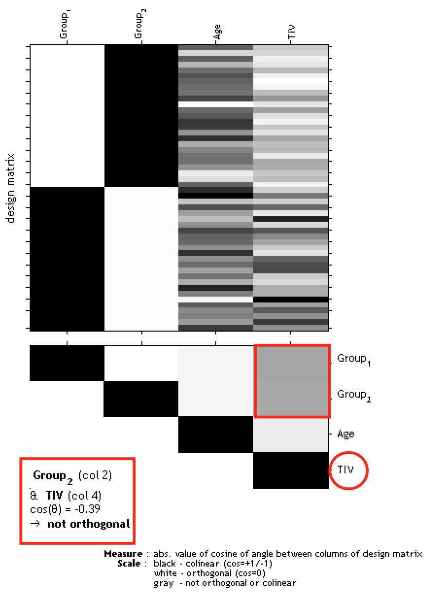

Orthogonality of total intracranial volume (TIV) to other parameters
If you have modeled TIV as confounding parameter it is necessary to check that TIV will be orthogonal (in other words independent) to any other parameter of interest in your analysis (e.g. parameters you are testing for). That means that TIV should not correlate with any other parameter of interest, otherwise not only the variance explained by TIV will be removed from your data, but also parts of the variance of your parameter of interest.
Please keep in mind that you have to use ''Overall mean'' as ''Centering'' for the TIV covariate. Otherwise, the orthogonality check sometimes even indicates a meaningful orthogonality only due to scaling issues.
In order to check for design orthogonality you can use the Review function in the SPM GUI. Select the SPM.mat file and choose Design -> Design orthogonality from the menu to display the design orthogonality. Gray boxes between the parameters point to a correlation: the darker the box the larger the correlation (which also holds for inverse correlations). If you click in the box the colinearity between the parameters will be displayed. 
The larger the correlation between TIV and any parameter of interest the more the need to not use TIV as confound. In that case an alternative approach is to use global scaling with TIV. Apply the following settings for this approach:
- Global calculation -> User -> Global values <- Define here the TIV values
- Global normalisation -> Overall grand mean scaling -> Yes
- Normalisation -> User -> Proportional
Please note that the global normalisation will also affect the absolute threshold for the masking because your images will be now scaled to a global value of 50. While usually an absolute threshold of 0.1..0.25 is recommended, the scaled values will be now smaller by a factor of around 30:
- If the mean TIV is 1500 all images are globally scaled to a value of 50. Thus, the overall scaling is 50/1500 = 1/30
- To get the (old) absolute threshold of 0.1 (0.2) now use 0.1/30 (0.2/30)